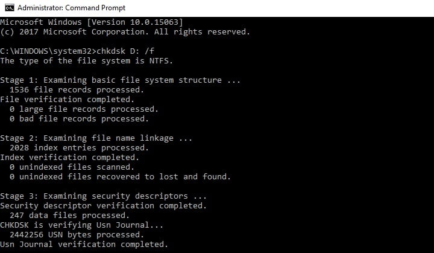
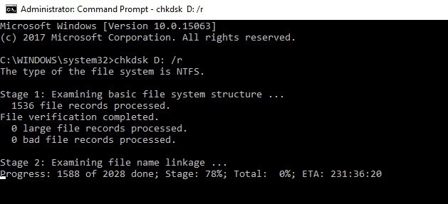
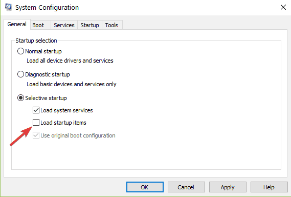
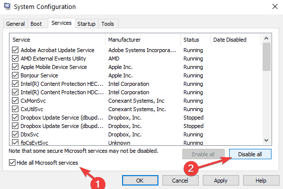

NTFS_FILE_SYSTEM
Este error es causado por una falla en el disco duro en el que se encuentra instalado el sistema operativo.
Comprobacion de errores en el disco
- Inicio > Escriba cmd > Ejecute Command prompt.
- Ingrese el comando chkdsk C: /f. (Reemplace C con la letra de la partición de su disco duro donde instaló el sistema operativo)
 - Ingrese el comando chkdsk C: /r Para corregir y reparar los errores y problemas físicos.

Otra solucion puede ser limpiar el arranque del ordenador.
Limpiar el arranque del ordenador
- Vaya a Inicio > Ingrese msconfig > Entre a Configuración del sistema.
- Vaya a la pestaña General > seleccione Selective startup > Deseleccioné Load startup item.
 - Vaya a la pestaña Servicios > seleccione Ocultar todos los servicios de Microsoft > haga clic en Desactivar todos.
 - Haga clic en Aplicar > haga clic en Aceptar > Reiniciar el equipo.